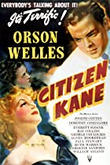

Citizen Kane (1941)
PG | 119 min | Drama, Mystery Following the death of publishing tycoon Charles Foster Kane, reporters scramble to uncover the meaning of his final utterance; 'Rosebud'.
Director: Orson Welles | Stars: Orson Welles, Joseph Cotten, Dorothy Comingore, Agnes Moorehead
Actors: 5 Stars Direction: 5 Stars Screenplay: 5 Stars Oscars: 1 Oscar Nominations: 9 BAFTA Awards: N/A BAFTA Nominations: N/A Golden Globes: N/A Golden Globe Nominations: N/A
